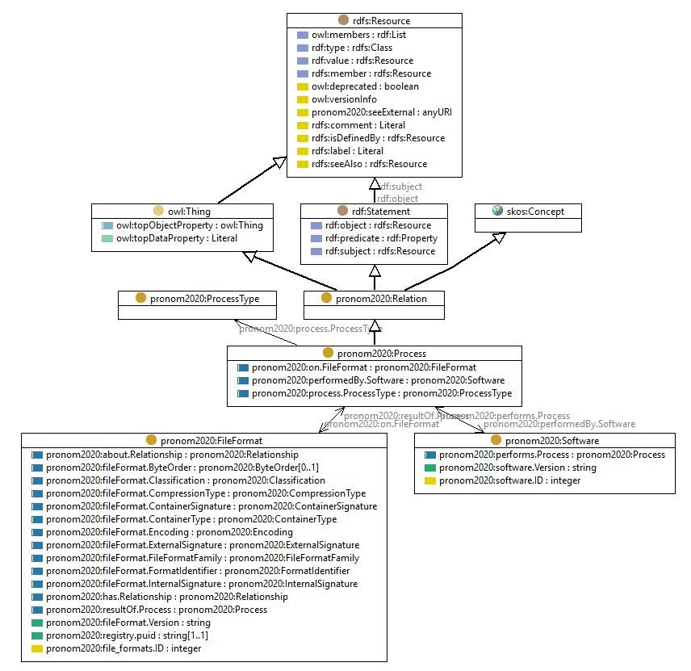

http://data.nationalarchives.gov.uk/formatregistry/def/Process
Class pronom2020:Process

rdf:type
owl:Class
rdfs:comment
The group of relationships associated with processes by software and fileFormats
rdfs:label
Process
rdfs:subClassOf
pronom2020:Relation
skos:prefLabel
Process relationship
References
as rdfs:domain (
pronom2020:performedBy.Software
,
pronom2020:on.FileFormat
)
as rdfs:range (
pronom2020:resultOf.Process
,
pronom2020:performs.Process
)
as rdfs:subClassOf (
pronom2020:ValidateProcess
,
pronom2020:RenderProcess
,
pronom2020:IdentifyProcess
,
pronom2020:ExtractMetadataProcess
,
pronom2020:CreateProcess
)
Generated with
TopBraid Composer
by
TopQuadrant, Inc.